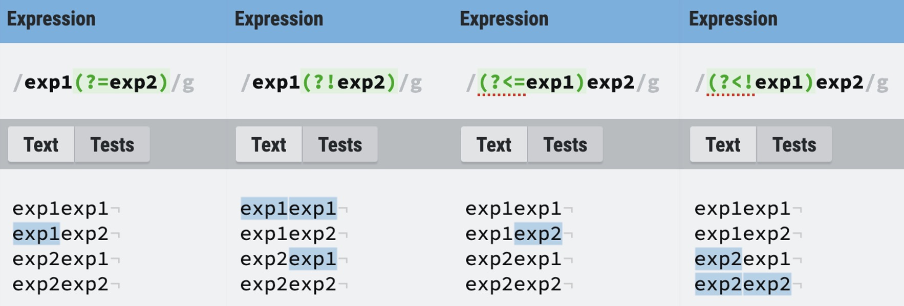

正则表达式
约 1653 个字 4 行代码 1 张图片 预计阅读时间 6 分钟
Abstract
正则表达式在匹配某类型的字符串并进行检查或者替换是一个非常有用的工具，在CTF比赛中也极为常见，多出现在网页PHP代码审计和脚本sed指令绕过。
学会它，这辈子有了（笑
简介
- 基本正则表达式(BRE)是一组由字母和符号组成的特殊文本，它可以用来从文本中找出满足你想要的格式的句子，是一种从左到右匹配主体字符串的模式。
- 还有一种正则表达式的扩展语法，对于sed命令来说要添加
-E参数(Extension)，笔者曾在初学阶段将二者混淆不清😅，因此会在文章中会穿插介绍一下两者的具体区别,实际上大部分用的都是正则表达式的扩展语法(ERE)，包括下面这个网站，因为扩展语法其实更好理解。 - 练习扩展正则表达式的在线网站。
语法
基本匹配
-
所有不是元字符的字符都可以直接写出来用来匹配。
REGULAR EXPRESSION : 234
TEST STRING : 12345
Warning
BRE与ERE的区别就在于对元字符的转义处理不同，接下来介绍的语法以扩展正则表达式(ERE)为准，两者区别详见后文。
元字符
点运算符.
-
匹配任意单个非换行的字符。
REGULAR EXPRESSION : 2.4
TEST STRING : 12345
-
如果想要匹配文本中的点，需要对输入的元字符进行转义，比如要匹配浮点数2.4，则对应的扩展正则表达式为
2\.4。
字符集[ ]
-
方括号用来指定一个字符集，在方括号中使用连字符来指定字符集的范围（不关心字符顺序）。
REGULAR EXPRESSION : [Tt]he
TEST STRING : The car is parked in the garage.
-
同点运算符，如果想要匹配文本中的中括号也需要对其进行转义。
- 值得注意的是，如果想要在字符集中加入中括号或者点，则转义或者不转义的效果是相同的，代表真正的文本字符。因为字符集只匹配单个字符，所以在字符集中使用点运算符号或者继续嵌套字符集是没有意义的，即
[.[]]与[\.\[\]]效果是相同的，匹配三种单个字符。
否定字符集^ 与 顺序匹配 -
-
在字符集中第一个字符若为^，则代表在方括号中使用连字符来指定不能在字符集的范围出现的字符。
REGULAR EXPRESSION : [^c]ar
TEST STRING : The car is parked in the garage.
-
[x-y]表示按顺序匹配从x到y的所有字符（ASCII码比较）。REGULAR EXPRESSION : [a-z]ar
TEST STRING : The car is parked in the garage.
-
如果想在字符集中表示真正的文本^或-符号，则需要转义。
REGULAR EXPRESSION : [\^]
TEST STRING : 123^456
星号运算符* 、 加号运算符+ 与 问号运算符?
-
星号运算符表示匹配在其之前的字符出现大于等于0次，加号运算符表示匹配在其之前的字符出现大于等于1次，问号运算符表示匹配在其之前的字符出现0次或1次。
REGULAR EXPRESSION : 2*3+
TEST STRING : 233333332
REGULAR EXPRESSION : T?he
TEST STRING : The car is parked in the garage.
-
在星号运算符和加号运算符后追加问号表示非贪婪匹配。
REGULAR EXPRESSION : 2+3*?
TEST STRING : 233333332
-
同理表示真正的星号加号问号需要转义。
大括号{ }
-
如果要匹配在其之前的字符出现等于特定次数或在某些次数范围内，上面三种字符就远远不够了，使用{x,y}代表出现大于等于x次小于等于y次（y可以为空表示无上限，大括号内可以只填一个数字代表等于某个特定次数）。
REGULAR EXPRESSION : [a-z]{4,}
TEST STRING : The car is parked in the garage.
-
同理表示真正的大括号需要转义。
或运算符 |
-
或运算符用作判断条件使用，优先级最低。
REGULAR EXPRESSION : (T|t)he|car
TEST STRING : The car is parked in the garage.
-
同理表示真正的或运算符需要转义。
锚点 ^与$
-
^用来匹配指定句子开头（与在字符集[ ]中的否定是同一个符号），$用来匹配指定句子结尾。
REGULAR EXPRESSION : ^(T|t)he|[a-z.]*$
TEST STRING : The car is parked in the garage.
-
同理表示真正的^或$运算符需要转义。
分组/捕获组/锚点断言 小括号( )
- 使用小括号指定一个分组，用或运算符分隔。
- 小括号也是捕获分组，将括号内匹配的内容进行缓存（详见后文的sed指令用法），若不想进行缓存则使用
(?:)进行匹配。 -
前面有匹配句子开头与结尾的锚点，也可以通过小括号来规定自己想要的锚点，因为锚点只匹配位置不匹配内容，也叫零宽断言（前后预查）。
-
先行断言和后行断言的四种形式:
语法 名称 规则 (?=pattern) 零宽正向先行断言 匹配后面可以匹配pattern的位置 (?!pattern) 零宽负向先行断言 匹配后面无法匹配pattern的位置 (?<=pattern) 零宽正向后行断言 匹配前面可以匹配pattern的位置 (?<!pattern) 零宽负向后行断言 匹配前面无法匹配pattern的位置 -
例子：

-
简写字符集
- 正则表达式提供一些常用的字符集简写。
| 简写 | 描述 |
|---|---|
| \w | 匹配所有字母数字，等同于[a-zA-Z0-9_] |
| \W | 匹配所有非字母数字，等同于[^\w] |
| \d | 匹配数字，等同于[0-9] |
| \D | 匹配非数字，等同于[^\d] |
| \s | 匹配所有空格字符，等同于[ \f\n\r\t\v] |
| \S | 匹配所有非空格字符，等同于[^\s] |
| \p | 匹配DOS行终止符，等同于[\r\n] |
| \cx | 匹配由 x 指明的控制字符，x 必须属于 [a-zA-Z]，否则 \c 直接视为 c，如 \cM 匹配 Ctrl-M 即回车符 |
修饰符
-
修饰符不属于表达式的内容，但是指定了匹配的规则，js 中的正则写法为 /pattern/flags，其中 flags 就是修饰符。
标志 描述 i 匹配忽略大小写 g 全局匹配(Don't return after first match) m 多行匹配，使 ^$ 匹配每行的开头和结尾 s 单行匹配，使 . 可以匹配换行符